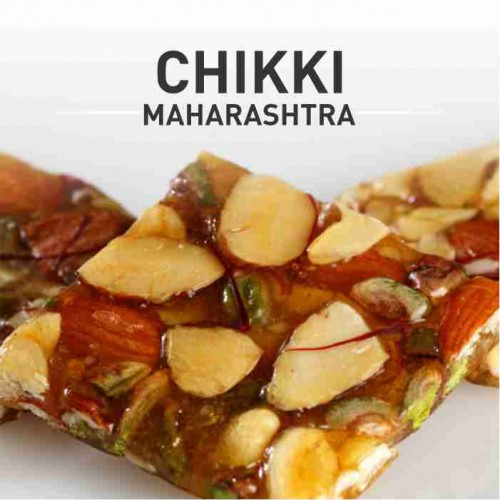
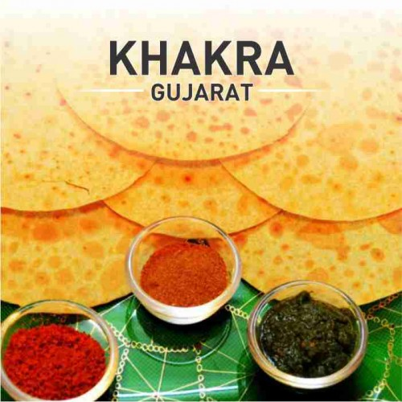
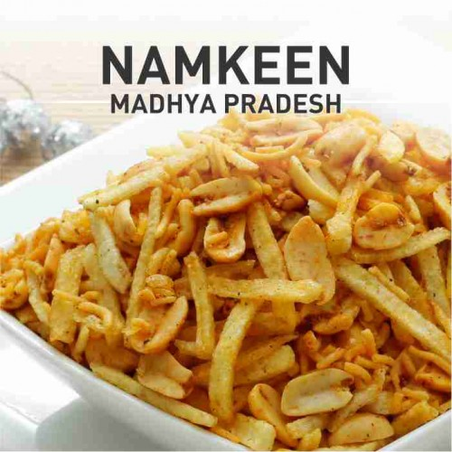
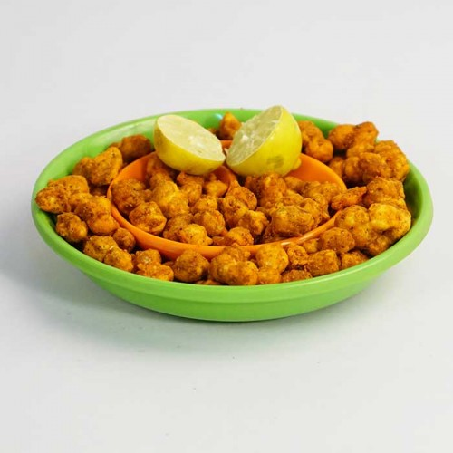
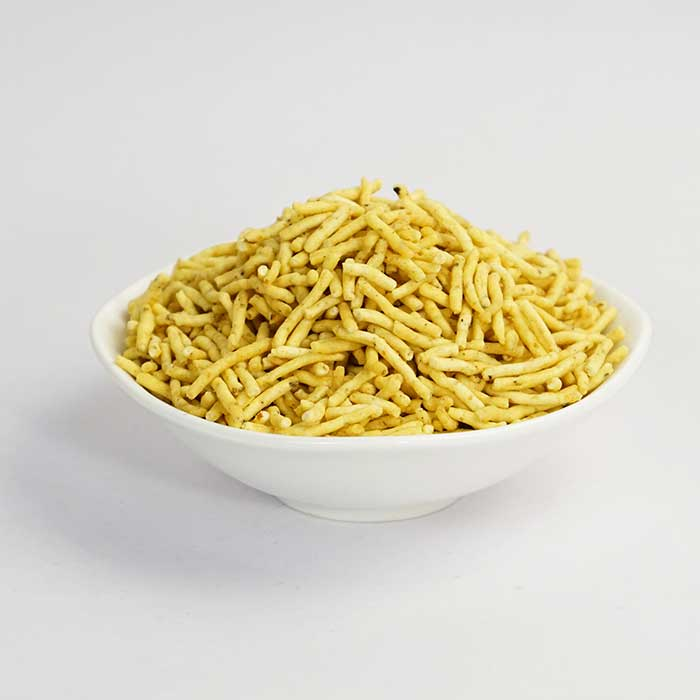
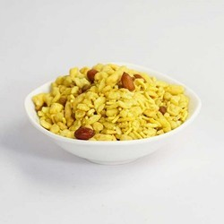
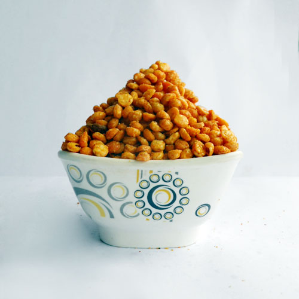
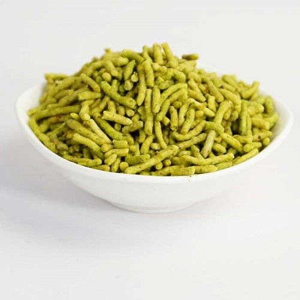
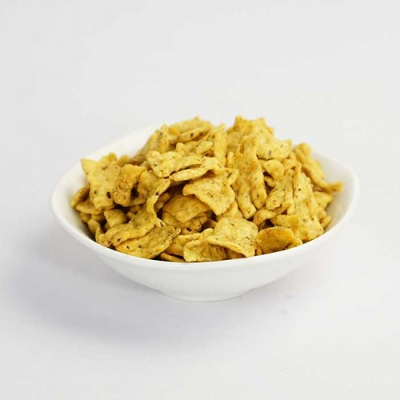
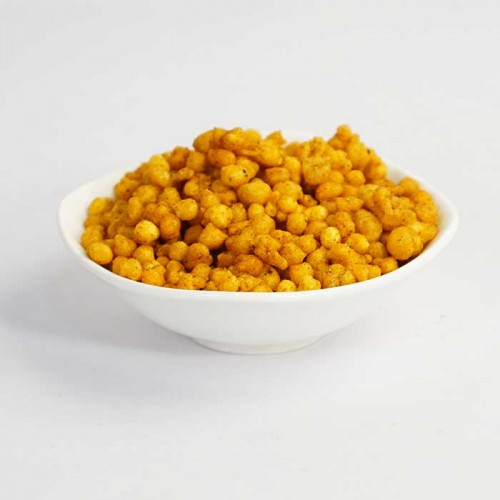

- 
CHIKKI
Chikki is a traditional Indian sweet generally made from peanuts and jaggery.There are several different varieties of chikki in addition to the most common groundnut chikki. Each variety of chikki is named depending upon the ingredients used, which include puffed or roasted Bengal gram, sesame, puffed rice, beaten rice, or Khobara.
In regions of North India, especially Bihar and Uttar Pradesh, this sweet is called Layiya Patti.... read more 
AGRA PETHA
Agra Petha is a translucent soft candy from Agra. Usually rectangular or cylindrical, it is made from the ash gourd vegetable (also known as winter melon or white pumpkin, or simply petha in Hindi and Urdu).
With growing demand and innovation, more varieties of the original preparation are available. Many flavoured variants are available, e.g. kesar petha, angoori petha etc.... read more- 
KHAKRA
Khakhra is a thin cracker common in the Gujarati and Rajasthani cuisines of western India, especially among Jains. It is made from mat bean, wheat flour and oil. It is served usually during breakfast.
Khakhras are individually hand-made and roasted to provide a crunchy and healthy snack that can be enjoyed with a selection of spicy pickles and sweet chutneys or with milk and tea... read more - 
NAMKEEN
Namkeen add a Special touch to every occasion. And in india, especially Indore, namkeens form an intergral part of Celebration, be it Marriage or Birth of Child or Festivals.
We have been preparing Namkeen from generations in the traditional Indori method, giving hygiene the top priority.... read more
WHY US
Siddharth Namkeen is one of the most famous namkeen and sweets brands in Indore. It has also earned the reputation of being one of the most trusted Superbarnds. The popularity of brand however is mainly due to unparalleled taste of the products it produces. The quality remains undiminished for all these years and the brand has taken into account changing needs of the customers. Some of the worth mentioning factors that make us a preferred name for namkeen, sweets ready to eat and gift hampers are as follows.... read moreOur Mission
To provide quality food prepared in a safe & hygienic environment. ‘We take care of you’.We value your money without compromising on quality. ‘Our customer is our highest priority’.
read more
- 
- 
- 
- 
- 
- 
- 
About Us
Marrying traditions with technology, we bring you the savoury tastes from the heart of India. Siddharth Namkeen has successfully captured the soul of the essence of Indore in the taste of variety of Namkeen and sweets.
Customer Support
Our Location
106, Yeshwant Road,Jawahar Marg, Indore,
Madhya Pradesh - 452007
Phone: 0731 - 2343856